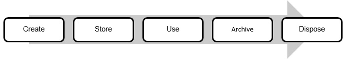

Purpose and Scope
The purpose of this policy and procedure is to provide direction to staff on the creation and management of information and records. It meets relevant legislation, regulations and Standards as set out in Schedule 1, Legislative References.
It applies to all:
- Wagtail Services staff;
- aspects of Wagtail Services’ business; and
- business information created and received.
This policy and procedure covers:
- information and records in all formats, including documents, emails, voice messages, memoranda, minutes, audio-visual materials and business system data;
- all applications used to create, manage and store information and records, including Wagtail Services’ client and financial management systems, emails, websites, social media, databases and business information systems; and
- information and records created for Wagtail Services and managed in-house and off-site.
Applicable NDIS Practice Standards
Information Management
Outcome: Management of each Participant’s information ensures that it is identifiable, accurately recorded, current and confidential. Each Participant’s information is easily accessible to the Participant and appropriately utilised by relevant workers.
Indicators
- An information management system is maintained that is relevant and proportionate to the size and scale of the organisation and records each Participant’s information in an accurate and timely manner.
- Documents are stored with appropriate use, access, transfer, storage, security, retrieval, retention, destruction and disposal processes relevant and proportionate to the scope and complexity of supports delivered.
Definitions
Information - knowledge that is communicated or received. It is the result of processing, gathering, manipulating and organising data in a way that adds to the knowledge of the receiver.
Information management – a system for creating, collecting, organising, storing, retrieving and distributing information. This information may be in any format and available from internal or external sources.
Record – information that is information in any form (including data in a computer system) and that is required to be kept as evidence of the activities or operations of a business.
Records management – a system for creating, receiving, maintaining, using and disposing of records. This includes processes for capturing and maintaining evidence of business activities and transactions.
Policy
Wagtail Services’ information and records are a corporate asset, vital for supporting its ongoing operations and for providing evidence of business decisions, activities and transactions.
Wagtail Services’ information and records management practices meet its business needs, accountability requirements and stakeholder expectations. They also support all stages of the information lifecycle:

Procedures
General
As per Wagtail Services’ Human Resources Policy and Procedure, all staff must undergo initial training and orientation, which includes training in privacy, confidentiality and information management. Staff knowledge and application of confidentiality, privacy and information management processes is monitored on a day-to-day basis and through annual Performance Reviews. Additional formal and on-the-job training is provided to staff where required.
All information, in paper copy, electronic or any other format, created by Wagtail Services staff in the course of their employment, or that is accessed by staff on Wagtail Services’ equipment, is the property of Wagtail Services.
Work-related information or storage devices (such as USB drives) must not be taken from Wagtail Services without permission from the Manager.
Creating Records
All Wagtail Services staff must create records of all business activities and decisions, including with respect to interacting with and supporting NDIS Participants. This includes file notes of verbal conversations related to Participant support or business activities, particularly where those conversations provide directions that need to be followed or queries that need to be followed up and answered.
Information that should not be recorded includes information that is not related to Wagtail Services’ activities and decisions and duplicated information where an appropriate record has already been created.
Records must be created in the most appropriate format for the information being recorded. For guidance on what format should be used to create a particular record, staff should consult the Manager.
Records created must contain all relevant detail and be accurate and objective. See the Participant Case Notes Policy and Procedure for guidance on recording support-related case notes.
Wherever possible, records should be created in digital format. Hard copy records should only be created when absolutely necessary (such as when they are required for legal purposes).
Storing Records
Records must be stored securely in the most appropriate system, whether it be physical (e.g. locked filing cabinets) or electronic. For guidance on what system should be used to store a particular record, staff should consult the Manager.
Records should be created and stored methodically and logically (e.g. in relevant categories, on relevant Participant or staff files, in chronological order, using naming conventions, etc.).
Where information is initially received in a digital format it should be retained in that format where possible (for instance, not printed and filed in hard copy). Digital records should only be converted to a different digital format if the content and quality of the record can be maintained.
Electronic Records
Wagtail Services’ electronic records are stored securely in the following information management systems:
- Zero for financial management;
- Visualcare for Participant record keeping
Staff must use individual usernames and passwords to access these systems. The systems have back up and disaster management arrangements in place that are managed by the respective system suppliers.
All Wagtail Services computers have password protection.
Business records must not be stored in email folders, shared folders, personal drives or external storage devices such as USBs, as they are not secure.
Where an email is considered a Wagtail Services record, it must be captured in the relevant information management system as soon as possible.
Records created when using social media applications or mobile devices may also need to be captured in the relevant information management system.
Hard Copy Records
All hard copy records that contain private and confidential information about Participants, staff or Wagtail Services must be stored in a locked filing cabinet, in a lockable area, with access to authorised personnel only.
Where it is necessary to remove private and confidential records from Wagtail Services’ premises, they must be stored securely in a non-transparent container (for example, a locked brief case).
Using Records
Access to Wagtail Services’ information management systems must be approved by the Manager.
Access to Wagtail Services’ information management systems will be reviewed regularly by the Manager and may be amended, suspended or terminated if a staff member’s employment situation changes.
Staff must only access records that are necessary for them to fulfil their duties. More detail on access to and disclosure of records is provided in Wagtail Services’ Privacy and Confidentiality Policy and Procedure.
To protect records when they are being used, staff must lock unattended computers and maintain a 'clean desk' policy.
Use of records by staff is monitored and file audits are undertaken to ensure files are complete, up-to-date, and procedures are being followed. The Manager also undertakes regular physical and digital access audits to ensure Wagtail Services continues to store records securely. See Schedule 2. Internal Review and External Audit Schedule for the regularity of these audits.
Retaining and Disposing of Records
Records that are not frequently used or that are not required for current business use (inactive records) may need to be:
- archived - if they need to be retained for a certain period; or
- disposed of - if they have already been kept for the required retention period.
The Manager is responsible for identifying records that need to be retained or disposed as part of the file, physical and digital access audits detailed above.
Retention Periods
Records that are considered public must be retained for the periods set out in the New South Wales: relevant Functional Retention and Disposal Authority (NSW State Archives and Records) https://www.records.nsw.gov.au/recordkeeping/rules/retention-and-disposal-authorities/functional
Queensland: relevant Retention and Disposal Schedule (Queensland State Archivist) https://www.forgov.qld.gov.au/search-retention-and-disposal-schedule.
In most cases Wagtail Services’ records are not public, but contain personal information, which is subject to QLD, NSW and Australian Privacy Law.
All records relating to Wagtail Services’ NDIS operations and service delivery must be kept for a minimum of seven years from the date they were created.
The Australian Taxation Office (ATO) requires businesses to keep records for five years from the date they were created. For example, a document used in the 2016 financial year must be kept until the end of the 2021 financial year.
Archiving Hard Copy Records
Inactive hard copy records with less than 12 months of their retention period remaining should be kept in the same way and location as active records. Inactive records with 12 months or more of their retention period remaining should be archived.
Inactive records that require archiving should be grouped with other similar records and placed in an archive box. All extraneous materials such as rubber bands, paperclips, bulldog clips, plastic sleeves and display folders should be removed. Staples do not need to be removed.
A Contents List must be completed and attached to each archive box. Archive boxes must be numbered and stored in a secure location. Wagtail Services’ archived records are stored onsite in a locked room and protected from pests, water, damp and fire.
Archiving Electronic Records
Where electronic records are not held in an information management system, they must be stored on a secure internal or external storage device. The file formats and the devices records are kept on must be able to be read for as long as the record is required to be retained.
Disposing of Records
Records should be disposed of once they have been kept for the required retention period. Where a New South Wales: relevant Functional Retention and Disposal Authority (NSW State Archives and Records) https://www.records.nsw.gov.au/recordkeeping/rules/retention-and-disposal-authorities/functional Queensland: relevant Retention and Disposal Schedule (Queensland State Archivist) https://www.forgov.qld.gov.au/search-retention-and-disposal-schedule]applies, Wagtail Services will comply with the disposal requirements it sets out.
Disposing of Electronic Records
The “delete” function is not sufficient to destroy electronic records as the information may still be recoverable.
Electronic records must be destroyed either by physical destruction of the storage device they are held on, or by clearing or purging the records held on the device.
Freedom of Information
Wagtail Services will provide Participants, their representatives and government agencies access to its records where this is required by law, including Freedom of Information legislation.
Supporting Documents
Documents relevant to this policy and procedure include:
- Privacy and Confidentiality Policy and Procedure
- Schedule 2. Internal Review and External Audit Schedule
Monitoring and Review
This policy and procedure will be reviewed at least every two years by the Leadership Team. Reviews will incorporate staff, Participant and other stakeholder feedback.
Wagtail Services’ feedback collection mechanisms, such as staff and Participant satisfaction surveys, will assess:
- satisfaction with Wagtail Services records and information management and privacy and confidentiality processes;
- whether stakeholders have received adequate information about privacy and confidentiality including how their records will be stored and disposed of and how they can access and change them; and
- the extent to which Participants and their supporters feel their privacy and confidentiality has been protected.
Wagtail Services’ Continuous Improvement Register will be used to record improvements identified and monitor the progress of their implementation. Where relevant, this information will be considered as part of Wagtail Services’ service planning and delivery processes.
↑ Back to Top